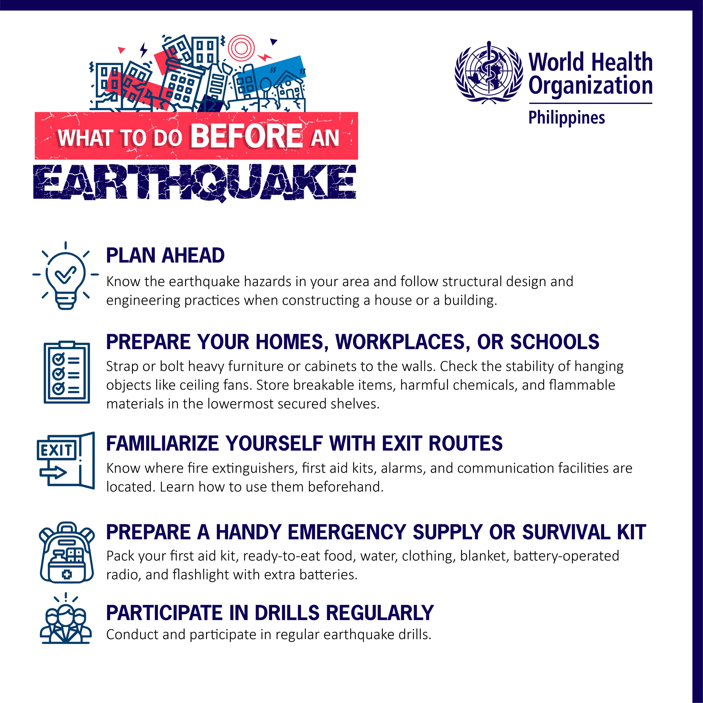

Step 1: Familiarize Yourself with Exits
Take time to familiarize yourself with the layout of the building and the locations of all available exits.
This includes primary exits such as main doors and secondary exits such as stairwells, fire escapes, or emergency exits.
Step 2: Identify Multiple Routes
Identify multiple evacuation routes from different areas of the building. This ensures that you have options in case one route is blocked or inaccessible during an emergency.
Pay attention to signs and markings indicating evacuation routes posted in hallways and classrooms.
Step 3: Review Evacuation Plans
Review evacuation plans and procedures provided by your school or college.
These plans typically outline specific actions to take during different types of emergencies and may include designated evacuation routes for various scenarios.

Step 4: Participate in Drills
Take part in evacuation drills conducted by your school or college. Pay attention to instructions provided by teachers or staff and practice using evacuation routes safely and efficiently.
Use these drills as an opportunity to familiarize yourself with exit locations and procedures.

Step 5: Know Your Location
Know your current location within the building at all times and be aware of the nearest exit routes available to you.
Identify the quickest and safest way to reach the nearest exit from your classroom, lab, or other areas you frequent.
Step 6: Follow Exit Signs
Pay attention to exit signs, arrows, and illuminated signs indicating the locations of emergency exits throughout the building.
Follow these signs during evacuations to guide you to safety.
Step 7: Stay Calm and Orderly
During evacuations, stay calm and orderly as you exit the building. Move quickly but safely towards the nearest exit, following the instructions of teachers, staff, or emergency responders.
Avoid pushing or crowding and help others if needed.
Step 8: Assist Others
If you encounter individuals who need assistance during evacuations, such as classmates with mobility issues or younger students, offer to help them evacuate safely.
Work together as a team to ensure that everyone can exit the building promptly.
Step 9: Designate Meeting Points
Once outside the building, move to a designated assembly point or meeting area where attendance can be taken and further instructions provided.
Familiarize yourself with these meeting points and know where to go in case of evacuation.

Step 10: Stay Informed
Stay informed about any updates or changes to evacuation routes or procedures.
ay attention to announcements, alerts, or instructions provided by school authorities or emergency responders during emergencies.